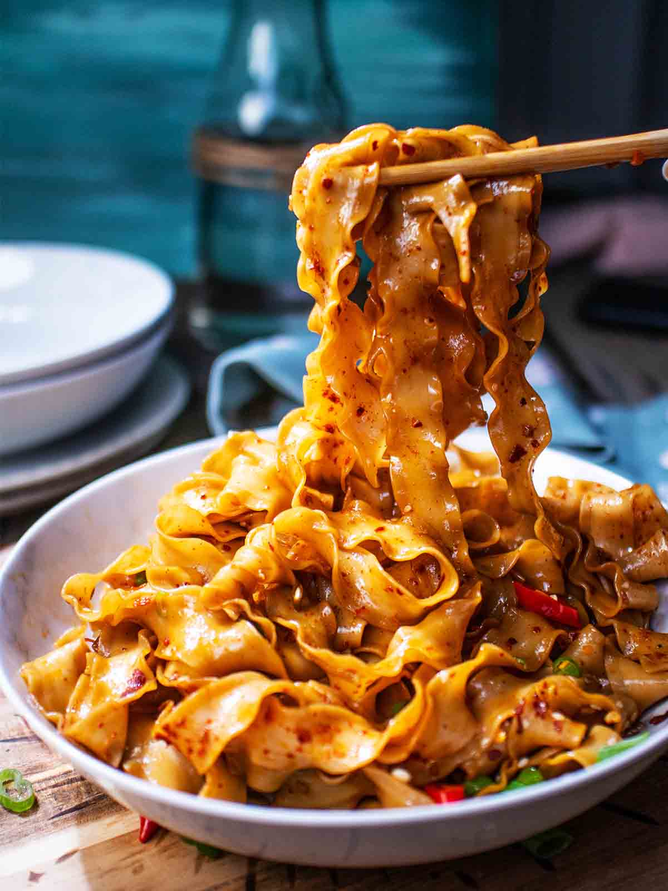

Chilli Garlic Noodles

Description
Garlic Chilli Noodles is an Asian influenced noodle dish featuring lots of garlic and chilli powder, and soy-based savory sauce.
Usually, they’re made with knife-cut wide noodles or handmade pulled noodles.
Ingredients
- One Scallion (sliced)
- Ten Cloves of Garlic (finely minced)
- 300 Grams Pork Mince or 200 Grams of Tofu if Vegetarian
- One small knob of Ginger (grated)
- Two Tablespoons Soy Sauce
- Two Tablespoons Oyster Sauce
- Two Tablespoons Chilli Crispy Oil
- One Tablespoon Mirin
- One Tablespoon Brown Sugar
Steps
Make Sauce
- In a small container, mix together chili pepper flakes, sugar, soy sauce, oyster sauce, and mirin.
Prep Vegetables
- Thinly slice the green onions. Separate the white part and the green part.
- Smash the garlic cloves and finely chop them.
- Grate a small knob of ginger.
Make Chilli Garlic Noodles
- Bring a pot of water to a boil. Once boiling, cook the noodles according to the package instructions.
- Meanwhile, to a wok (or pan), add the oil (3 tbsp) and heat it over medium-high heat. Once it’s heated, add the white part of the green onions, garlic, and ginger (1/2 tsp). Cook for 1 to 2 minutes or until they get a little bit of color.
- Add the ground pork and black pepper to taste. Break up the pork and saute for 1 to 2 minutes or until no longer pink. Reduce the heat to medium (or low). Add in the sauce and keep stirring it for 1 to 2 minutes.
- Add the drained noodles. Toss until completely coated. Divide the noodles onto serving plates. Garnish with the bok choy, green onions, and sesame seeds.
Home